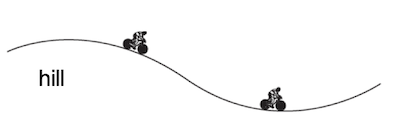
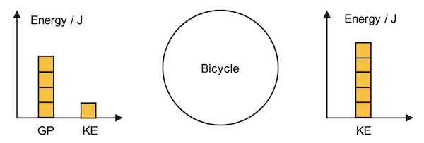
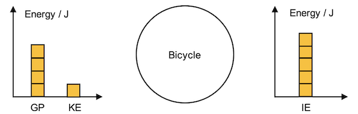
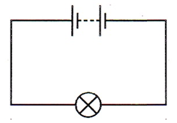
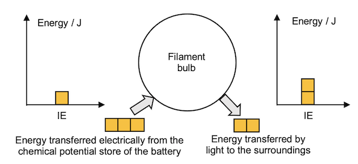
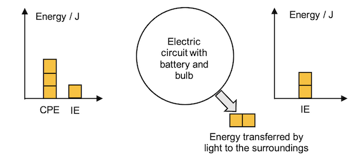

In our daily lives, we come across and require different kinds of energy for efficient living. Energy can be described as being in different ‘stores’. Each energy store can be associated with a system in which its elements possess the energy store or interact through the transfer of energy between energy stores.
The SI unit of Energy is the joule (J). Energy is a scalar quantity.
Examples of energy stores are:
| Energy Store | Example of System | Description |
|---|---|---|
| Kinetic store | Object in motion | Energy that a body has due to its movement. $$E_k = \dfrac{1}{2}mv^2$$where $E_k$: energy in the kinetic store (in J)
|
| Gravitational potential store | Object and the Earth | The energy that a body has due to its position above the reference level. $$E_p = mgh$$where $E_p$: energy in the gravitational potential store (in J)
|
| Chemical potential store | Food, battery | Energy that is stored in substances due to the positions of particles that make up the substance. Fuels such as oil, wood, coal, electric cells, food and explosives have chemical potential energy. |
| Elastic potential store | Mass suspended on a spring | Energy stored in a spring when it is held in a stretched or compressed state. |
| Internal store | Molecules in a body | The sum of the random microscopic kinetic and potential energies of all the atoms and molecules in a body. |
| Nuclear store | Nuclear reactor | The energy stored in the nucleus of an atom and may be released during nuclear fission or fusion. |
| Electrostatic store | Thunderclouds | The energy stored due to relative movement between electric charges. |
| Magnetic store | Fridge magnet | The energy stored due to relative movement between magnetic poles. |
The principle of the conservation of energy states that energy cannot be created or destroyed; it can only be transferred or transformed from one form to another. This means that the total energy in an isolated system remains constant over time. To apply this principle to new situations or solve related problems, identify all forms of energy involved, such as kinetic, potential, thermal, or chemical energy. Calculate the initial and final energies, ensuring they are equal, accounting for energy transfers or transformations.
The word equation for this calculation can be simplied as:
Initial energy stores + Energy transferred in = Final energy stores + Energy transferred out
For example, when a cyclist on a moving bicycle goes down a slope without pedalling, the gravitational potential energy at the highest point converts into kinetic energy as it descends, while the total energy remains constant. By understanding and tracking these energy changes, you can solve a wide range of physics problems accurately.
These energy transfers can also be represented using bar charts with the use of squares to represent the rough quantity changes before calculation is done. This method helps in visualisation and organising the energy conversions for calculation.


On the other hand, if the cyclist applies the brakes as the bicycle descends such that it comes to a stop, the energy at the end is in the internal energy store.

The diagram can also be applied to non-isolated systems. When we consider the energy transfer related to a light bulb, we will need to include the energy transferred into and out of the system.


Depending on the elements considered within a system, the energy transfer can sometimes be internal. For example, in the context of the light bulb, if we consider the circuit as the system of concern, the energy transferred electrically to the bulb can be visualised instead as a direct transfer of chemical potential energy to other forms of energy.

However, regardless of which diagram is used, the energy calculations should still be consistent.